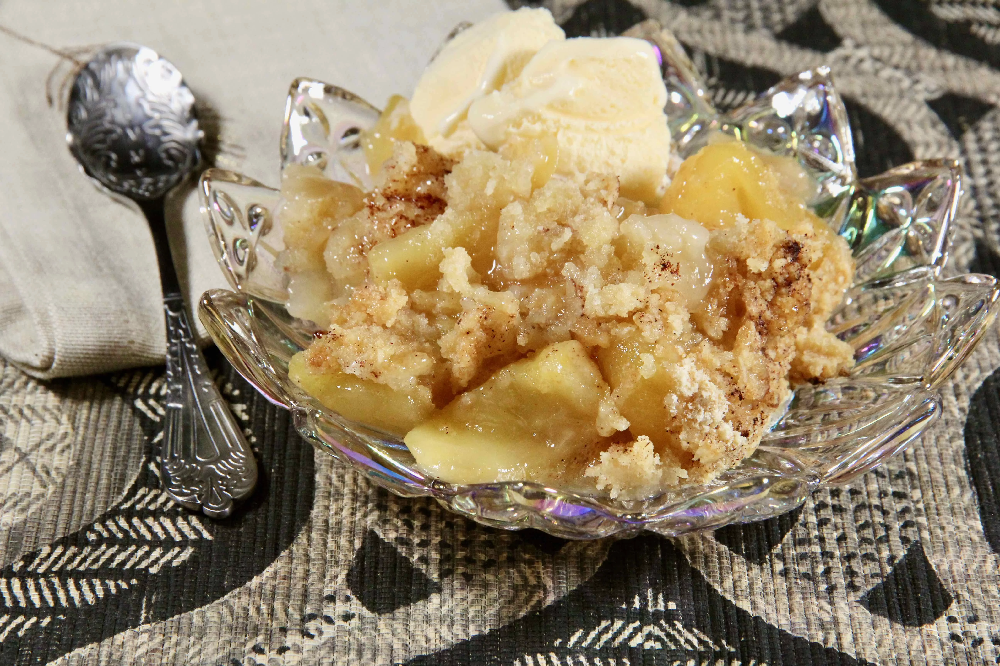

Apple Crumble

A family favorite, this apple crumble was originally my grandmother Hazel's recipe which my mom made on a regular basis. She would make two at a time to take to sick or shut-in friends, or to potlucks. There is never any left. Serve warm with French vanilla yogurt.
Ingredients
Filling
- 7 Large apples - peeled, cored, and sliced
- 1 cup white sugar
- 1 tablespoon ground cinnamon
Topping
- 1 cup all-purpose flour
- 1/4 cup brown sugar
- 1/3 cup unsalted butter, cubed
Steps
- Preheat over to 350 degrees F
- Spread apples in an even layer in a deep dish pie plate or 8-inch square glass casserole dish. Cover with white sugar, then top with cinnamon.
- Combine flour and brown sugar for topping in a bowl. Add butter and cut in with a pastry blender. Spread topping evenly over apple mixture and pat down.
- Bake in the preheated oven until apple mixture is bubbling and topping is browned, about 55 minutes.